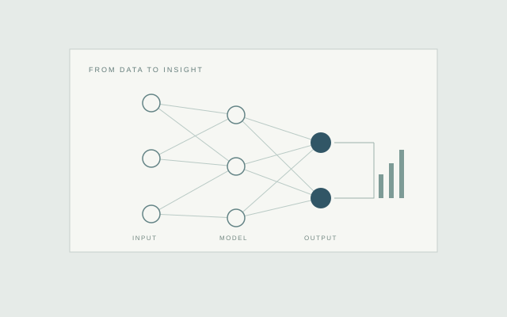

ILLUSTRATIVE COVERSELECTED PROJECT / 03
[Additional project]
[Describe the problem, your approach, and the outcome.]
[Add your project title, contribution, results and repository link.]
EXPLORATION & PRACTICE
A wider collection of projects, experiments, and independent work.

ILLUSTRATIVE COVER[Describe the problem, your approach, and the outcome.]
[Add your project title, contribution, results and repository link.]
![Illustrative [additional project] diagram](assets/imaging.svg) ILLUSTRATIVE COVER
ILLUSTRATIVE COVER[Explain your contribution and what makes this work relevant.]
[Add your project title, contribution, results and repository link.]